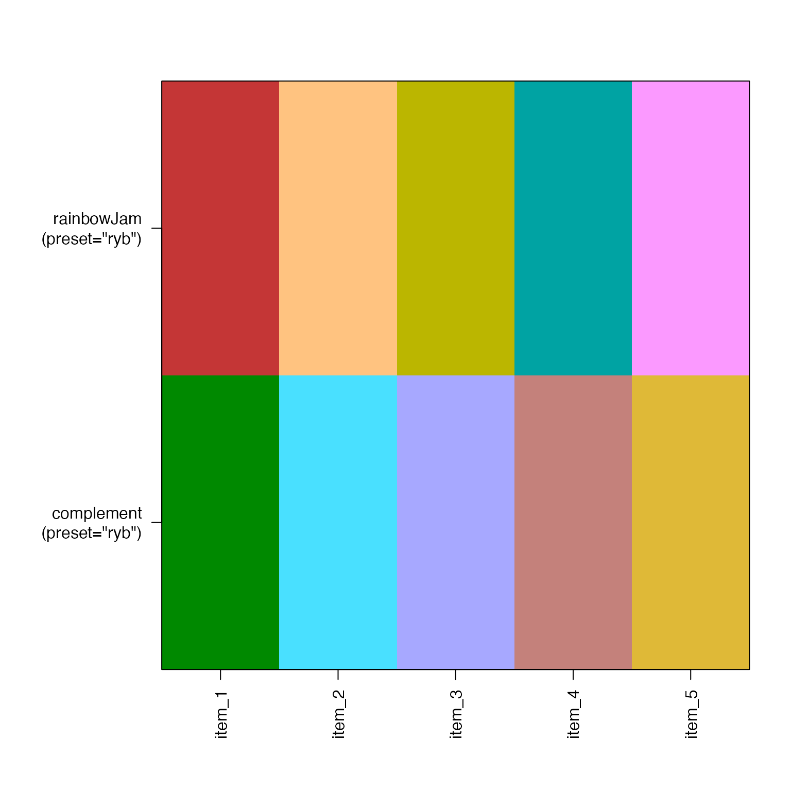
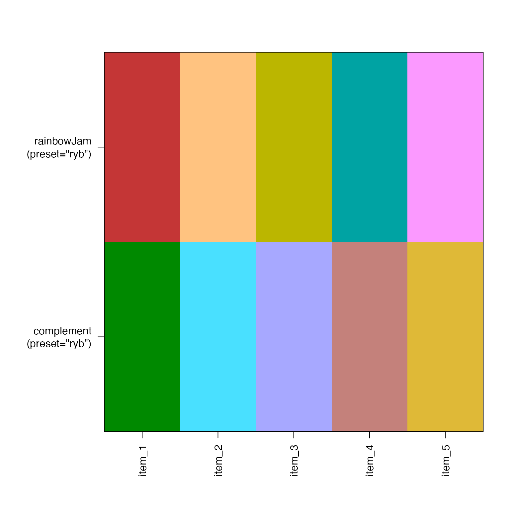
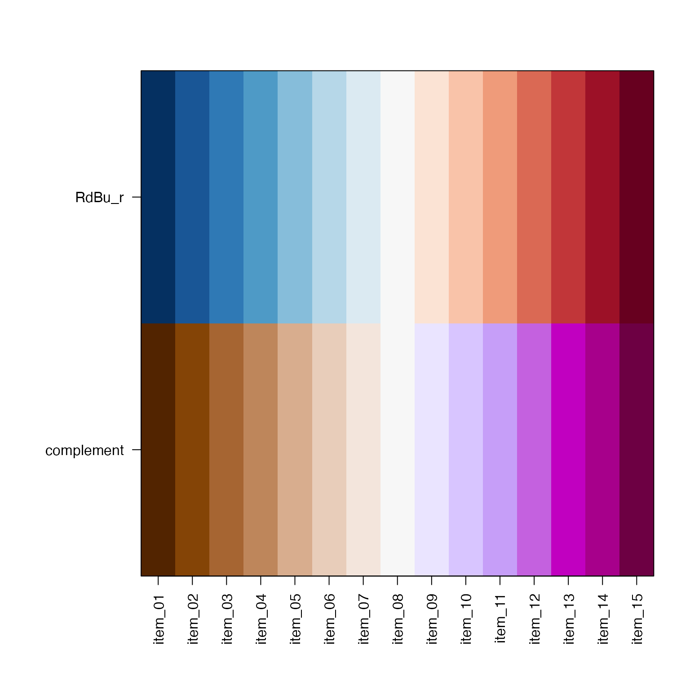
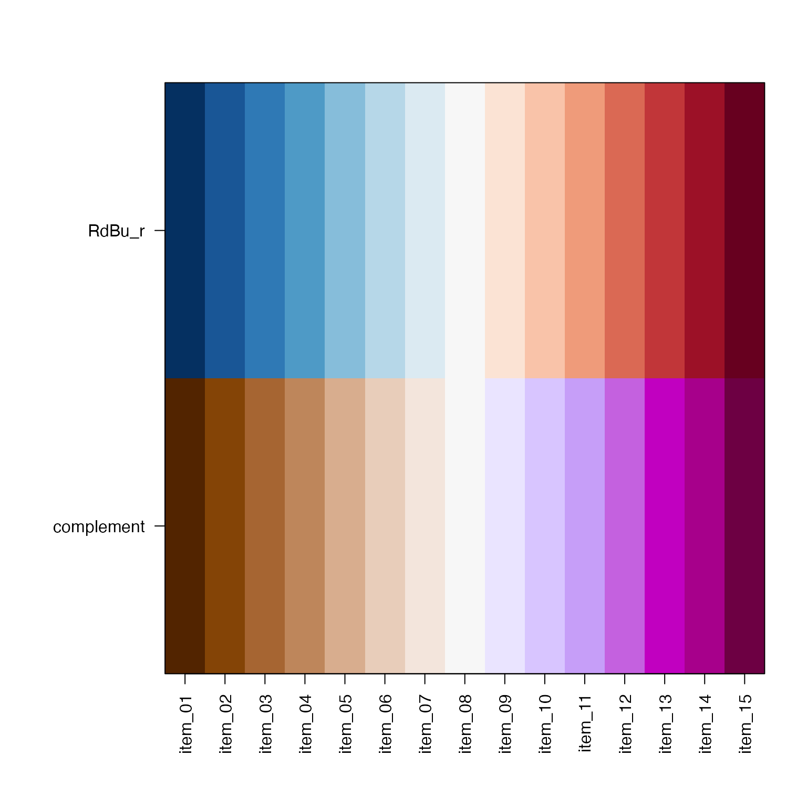

Create color complement by rotating the color hue
Source:R/colorjam-complement.R
color_complement.RdCreate color complement by rotating the color hue
Arguments
- color
charactervector of R compatible colors.- Hflip
numericvalue in degrees (from 0 to 360) added to the color hue to produce the final color hue. Typically 180 degrees will select the color opposite the input color on a virtual color wheel. Note thatwarpHue=TRUEalso enables a customized color wheel.- Cfloor
numericdeprecated in favor ofCrange, however whenCflooris provided, it is given priority overCrange. value used to limit output chromaCvalues to this minimum value, to ensure a minimum color saturation.- Crange
numericvector with the permitted range of output color chromaCvalues. When supplied, output values are forced to this range with no other scaling of intermediate values. Note that input colors at or below chromaCgreyare considered greyscale and are not complemented.- Lrange
numericvector with the permitted range of output luminanceLvalues. When supplied, output values are simply forced to this range with no other scaling of intermediate values.- Cgrey
numericcolor chroma, at or below which a color is considered greyscale, therefore the color hue is not relevant, and theCrangeis not applied.- useWarpHue
logicaldefault TRUE, whether to use the preset. When FALSE it effectively uses preset='rgb' which performs no particular hue adjustments. Note the 'rgb' color wheel is not particularly intuitive for complementary colors.- use_hsl
logicaldefault TRUE, use HSL to determine equivalent complementary values for Saturation (S) and Lightness (L), rather than HCL where Chroma (C) and Luminance (L) is not at all consistent across the color wheel.- ...
additional arguments are ignored.
Details
This function rotates the color hue to create a complementary
color for each color input. It differs from standard methods
by using warped color hue by default (useWarpHue=TRUE), which
uses a red-yellow-blue color wheel instead of R default
red-green-blue. It also imposes a minimum chroma, which
ensures the output color is reasonably high in color
saturation.
See also
Other colorjam assignment:
add_colors(),
col_div_xf(),
col_linear_xf(),
group2colors(),
matrix2heatColors(),
rainbowJamMulti(),
vals2colorLevels(),
vibrant_color_by_hue()
Other colorjam core:
blend_colors(),
closestRcolor(),
colors_to_df(),
group2colors(),
rainbowJam(),
sort_colors(),
subset_colors()
Examples
n <- 5;
rc <- colorjam::rainbowJam(n);
rc_comp <- color_complement(rc, preset="dichromat2");
rc_comp2 <- color_complement(rc, preset="dichromat2", useWarpHue=FALSE);
rc_comp2rgb <- color_complement(rc, preset="rgb");
rc_comp3 <- color_complement(rc, preset="ryb");
jamba::showColors(list(rainbowJam=rc,
`color_complement\n(preset="dichromat")`=rc_comp,
`color_complement\n(useWarpHue=FALSE)`=rc_comp2,
`color_complement\n(preset="rgb")`=rc_comp2rgb,
`color_complement\n(preset="ryb")`=rc_comp3));
 n <- 8
rc <- colorjam::rainbowJam(n, preset="ryb");
rc_comp <- color_complement(rc, preset="ryb");
jamba::showColors(list(
`rainbowJam\n(preset="ryb")`=rc,
`color_complement\n(preset="ryb")`=rc_comp));

## divergent color gradients through white
## hint: use higher lens value to make middle colors more intense
rc <- colorjam::rainbowJam(n);
rc_comp <- color_complement(rc);
rc_ramps <- lapply(jamba::nameVector(seq_along(rc)), function(i){
j <- jamba::getColorRamp(c(rc[i], "white", rc_comp[i]),
n=25,
lens=0,
divergent=TRUE);
names(j) <- "";
names(j)[1] <- "original colors";
names(j)[25] <- "color complements";
j;
});
jamba::showColors(rc_ramps, groupCellnotes=TRUE, groupByColors=FALSE);
n <- 8
rc <- colorjam::rainbowJam(n, preset="ryb");
rc_comp <- color_complement(rc, preset="ryb");
jamba::showColors(list(
`rainbowJam\n(preset="ryb")`=rc,
`color_complement\n(preset="ryb")`=rc_comp));

## divergent color gradients through white
## hint: use higher lens value to make middle colors more intense
rc <- colorjam::rainbowJam(n);
rc_comp <- color_complement(rc);
rc_ramps <- lapply(jamba::nameVector(seq_along(rc)), function(i){
j <- jamba::getColorRamp(c(rc[i], "white", rc_comp[i]),
n=25,
lens=0,
divergent=TRUE);
names(j) <- "";
names(j)[1] <- "original colors";
names(j)[25] <- "color complements";
j;
});
jamba::showColors(rc_ramps, groupCellnotes=TRUE, groupByColors=FALSE);
 ## divergent color gradients through black
## hint: use higher lens value to make middle colors more intense
rc_ramps2 <- lapply(jamba::nameVector(seq_along(rc)), function(i){
j <- jamba::getColorRamp(c(rc[i], "black", rc_comp[i]),
n=25,
lens=1,
divergent=TRUE);
names(j) <- "";
names(j)[1] <- "original colors";
names(j)[25] <- "color complements";
j;
});
jamba::showColors(rc_ramps2, groupCellnotes=TRUE, groupByColors=FALSE);
## divergent color gradients through black
## hint: use higher lens value to make middle colors more intense
rc_ramps2 <- lapply(jamba::nameVector(seq_along(rc)), function(i){
j <- jamba::getColorRamp(c(rc[i], "black", rc_comp[i]),
n=25,
lens=1,
divergent=TRUE);
names(j) <- "";
names(j)[1] <- "original colors";
names(j)[25] <- "color complements";
j;
});
jamba::showColors(rc_ramps2, groupCellnotes=TRUE, groupByColors=FALSE);
 # test divergent color gradient
RdBu_r <- jamba::getColorRamp("RdBu_r");
rc_divergent <- color_complement(RdBu_r)
jamba::showColors(list(RdBu_r=RdBu_r, complement=rc_divergent));

# test divergent color gradient
RdBu_r <- jamba::getColorRamp("RdBu_r");
rc_divergent <- color_complement(RdBu_r)
jamba::showColors(list(RdBu_r=RdBu_r, complement=rc_divergent));
